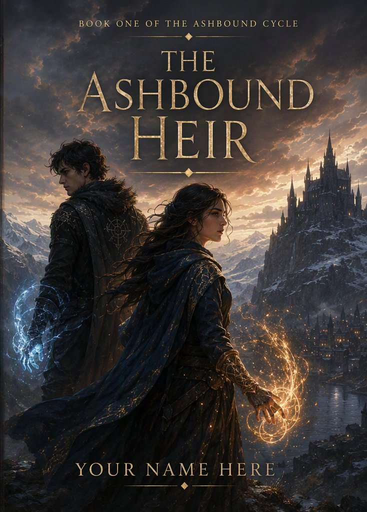

The gate remembers every hand that opens it. It has just remembered his.
It was the most beautiful day EVER. All my life I had always been kept away in a cave, sleeping on the hard rock with only my arms for a pillow. For the first time in months, I stepped out into the warming sunlight. The little birds chattered in their happy songs, smiling at the batty moths that flew past them.
Have you ever seen a green sun? Well, I haven't either. Not that I discount its existence, though. According to legend the one who could reach the sun when it turned green would inherit a power beyond anything one could imagine. I don't know about that - I can imagine a whole lot.
As the night slowly came upon me, I sighed with contentment, lying on the green grass that tickled my toes. The clouds in the sky cast shadows across my face, cooling me.
However, all good things must come to an end.
An arrow whistled through the air and embedded itself next to my head. Who could have such a bad aim? What? Here I am in a bad situation and I am worrying about their inaccuracy? I turned and fled back to the safety of the cave, not daring to look back. Cowardly? Maybe. But I’ve always believed the sensible thing to do when arrows are involved is to not be where the arrows are.
Alas, reality and sensibility don’t always mix. Just as I leapt through the cave entrance, a burning, stinging sensation shot through my leg and I knew that at least one arrow had found its mark after all. I dragged myself to the door, meaning to slam it shut and enchant it, but a dark blackness swam through my head, and I weakly cried out in pain.
I WILL NOT FAINT!! I reached again for the door. The blackness overtook me anyway.
Now, as I lie here on the edge of unconsciousness, let me pause and tell you a few important things. I completely loathe and detest the pouring rain. There is nothing worse than the feeling of rain pelting against you. Some lions asked me the other day if I was human, but then I just gave them a look and showed them my feet. No human has feet like this. Or eyes like mine, for that matter. Not to mention humans can't talk to lions. I live in a cave because humans can't stand my feet. They could get along okay with my eyes. Never my feet.
Enough of my feet. It is time for me to finish my entrance into the land of the unconscious. A small worry hovers over me about the anonymity of the assailant. Oh, and the fact that my door is still open. Meaning whoever is coming won’t even have to break in. Disappointing, honestly. I expect more of myself.
I don't know what most people think being unconscious is like, but let me tell you now that it is a bunch of nothingness. I do not remember a single thing that happened while I was out. Some claim to hear vague voices or see blurry images that they remember later on, but there was none of that for me.
The first sensation that filtered through to my brain was a prickling in my legs. Do you know that feeling of needles in your leg after it has fallen asleep? Well, that is what it felt like. Except my leg wasn't asleep. There really were needles poking both of my legs. I couldn't see them or anything, but the sensation was so acute I swear to you now that the needles must have been invisible or something. Enough of needles - you're going to start thinking I'm an addict. Well, I do have a few addictions, but just not to those kinds of drugs. Hi, my name is Shasta Lighthousten and I am a dandelion clover addict.
A sudden bump startled me and I opened my eyes, not realizing they had been closed. The beauty of the previous day was nothing in comparison to the sight that met my eyes. As a female, I am attracted to beautiful sights - and this sight was beautiful (if you imagine away the straps that bound me to my captor's cart). Directly behind me was a large gorgeous mountain. Think of the most beautiful mountain you have ever seen and think of the way the sunlight reflects off it at dusk - that is what I was seeing. I was so entranced by this mountain, I forgot to worry about my predicament for an entire quarter of a minute.
Then the cart stopped. Some people know how to stop carts nicely where you hardly even feel the change in acceleration, but this idiot just came to an abrupt halt. Later in the day I'd probably have a nasty bruise on the back of my head, but not like it could compare to my leg. The wound had gone from a sting to a deep, hot throb, swollen enough that I didn't want to look at it. However long I'd been out, it had been long enough for that.
I heard a thud as the driver jumped onto the ground and the subsequent crunch of gravel beneath his feet. How do I know that this person is male? I can smell it. I looked up eagerly, hoping to catch a glimpse of his face. Unfortunately, he wore a black sock with holes over his face.
Any hope of receiving kindly treatment faded as he ruthlessly cut my bonds. I fell ungracefully to the ground and literally ate dirt. I turned to spit on his feet, but he had already passed out of spitting range. He pulled a dark blue cloak out of the cart and twirled it about his shoulders.
"Don't even think about running away," he growled through a sneer. Disregarding his warning, I turned to escape. I had stumbled no more than five steps towards the mountain when I felt a powerful force hurtle me to the ground. Not a shove or a trip, but something that reached out, wrapped itself around me and then yanked me to the ground.
My captor's harsh laughter rang through the air as I moaned in pain. I felt a cold, sick suspicion that I didn’t want to put into words. My fingers strayed to my wrist, needing to feel reassuring power flowing through my Charm. When my fingers felt only skin, the sick feeling in my stomach spread to a clammy cold through my entire body. Hoping against hope, I frantically scanned the gravel where I had fallen. I hadn’t been parted from it before. It couldn’t be far.
But I saw nothing in the dirt around me other than a set of large, ugly shoes. I looked up from where I knelt in the gravel.
"I know about your people and your Charms," he spat these words out like a curse."You must obey my commands for I interwove your Charm with my own."
Keeping his cool gray eyes fixed on my face he slowly pulled off his mask, revealing a maze of scars decorating his face.
My eyes flitted from his face to the hand holding his mask. On his forearm was a brightly colored tattoo. A cold chill ran over my spine like a cold breeze on a warm day.
This man bore my people's Seal of Trust. It was a symbol that until now had always brought reassurance and indicated a person I could trust. But based on his unkind actions, I feared that this man was the one who had betrayed my mother so long ago.
There was only one man who had gained the trust of my people, only one human to receive the Seal of Trust, who then also became the only Bearer of the Seal to kill another Bearer.
"Follow me," he commanded as he strode into the trees that lined the gravel road. "If you are unhappy with the situation now, you are going to hate me even more when you see what I have to show you."
So that’s where we’re at now. I have no choice but to comply and follow him into the forest. If you have any bright ideas, that’s only because you’re sitting in peace and security with a lot of time to think. But do try to think of those things ahead of time. It might come in handy one day.
There are few things in life that I truly hate. One of my biggest pet peeves is when people chew their fingernails in public. I can't help but picture all the dirt, dead skin cells, and minute critters they are ingesting and it makes me shiver! Anyhow, that isn't really pertinent to the situation because I have a feeling this guy would never chew his nails. The pet peeve I was actually thinking of is my third biggest pet peeve. I HATE it when people I dislike are right when I want them to be wrong. After my captor told me I'd hate him even more pretty soon, I was determined to not care. But he was right. So I despise him doubly now.
Things wouldn't have been half bad if he'd had enough sense to keep his big mouth shut. But no. We walked for what was probably miles, all uphill through thick brush. Every time I stumbled in the slightest, he had something to say about it. There are gentlemen in the world. There are also men who laugh at women who struggle to walk because of a leg wound. Guess what kind of guy I got stuck with.
"Watch your step you freak," he growled at me as I stumbled over a stone I could have sworn had not been there a minute ago.
"Freak - there’s an insult I’ve never heard before," I muttered. And then I was catching myself on a root I KNOW hadn’t been there when he'd walked past that exact spot. He tried another insult at this latest stumble, but still included "freak". Apparently his vocabulary had limits. I nearly went down for good when I walked straight into a stump.
That stump hadn't been there for years. No way.
I couldn't believe I'd been so thick! This man was drawing on the powers in my Charm and placing obstacles in my path. I wasn't completely powerless without my Charm, though. I sat on the stump, pretending to catch my breath, but in reality I was mentally reaching out to the nature around me.
Every living thing holds a little power, if it’s willing to share. Without my Charm I was down to asking them politely to share, instead of being able to command it. I surprisingly found a willing Source, not ten feet away, in an old oak. She was very kind and amiable and agreed to allow me to draw upon her power for the next half-mile.
Standing, I glared at my captor and gestured that I was ready to continue. He muttered something about me being useless without a Charm. I smothered a mischievous grin with a grimace. Let him think that.
He had not walked five paces before I opened a pit beneath his feet. The oak wasn't thrilled about it, but I assured her he'd still be walking when I was done with him. He shot me a suspicious look, but I'd already turned my back so he wouldn't catch the smile.
During the next half-mile, he was the one stumbling over things no matter how carefully he tried to watch his step. I amused myself by coming up with creative obstacles that he wouldn’t be so quick to catch on to. Turtles, miniature lions, puddles hidden under a layer of leaves. The oak drew the line at bear traps or anything that would harm him. She's an old softie.
His brain must have been working at half-speed because he didn't figure out that I was the cause of his troubles until just before we caught sight of smoke rising above the treetops. I halted in surprise as we stepped into a clearing.
My captor lived in a large three-story mansion in the middle of an Ancient Wood. He was obviously rich and had many servants scrambling around the yard doing odd jobs. I scrambled to catch up and then my pace quickened in anticipation as we neared his house. I don't know why I thought he would give me anything comfortable, or permit me a hot shower. He'd already proved himself to be, for lack of a better word, a JERK. But apparently some part of me still thought that a nice house meant a nice room.
The large glass double doors opened upon a verbal command. I was impressed and irritated in equal measure. You would have been impressed too at the genuine beauty. But I was irritated because it meant that I had underestimated him. And underestimating enemies is number six on my list of pet peeves.
He led me through a maze of grand rooms and I felt as though I was wandering through one of my mother’s stories. How she had described the kind of houses our people used to share with extended family and close friends, back when we had houses at all. This one matched every detail she'd described, minus the one that mattered: it had none of the warmth.
"You like it?" he asked, in a tone I didn’t understand.
"Well," I hesitated, but “Yes” was all I really could say.
"Well, stop gawking and I'll show you to your new quarters." And so I’m letting myself really hope for the first time since waking on that cart. Maybe this whole situation won’t be so bad after all.
Before we reach my new room, I want to tell you about the wonderful light fixtures. There are many elements I think are imperative in a house. Flooring transitions matter to me - how one room transitions into another. Also table legs. But at the top of the list are light fixtures. This place has intricately decorated covers on every light source with the occasional immense chandeliers. He doesn’t seem to be using regular candles, but there’s some kind of soft magical glow emanating from behind each beautiful cover. It’s entrancing, I mean WOW!
.. and get thrown into a dungeon for my troubles.
My bare feet padded along the warm hardwood floors. I nearly walked into a wall twice, too busy staring at the tapestries. They looked almost alive. The heating was just as impressive: not a single cold patch, not even on the stairwells.
He paused before a door: "Are you ready to see where you will be staying?"
I didn't bother answering, just gestured for him to get on with it. The outside of the door was ornately decorated. A good sign. The heavy lock and brace bolted on the outside, less so…
He swung the door open. It was too dark in the room to see very far. A question popped into my head. I stepped closer to the door and then turned to ask him my question.
And that’s when I caught the look on his face. Like he'd been waiting the whole tour for exactly this moment. It was also a strange kind of look where you don’t know if you want to hit the face wearing it, or to run far and fast.
He shoved me through the door.
I think it is okay to occasionally give a little shove to people, especially when they are being too slow. But not when the person you shove will fall down a flight of stairs. Have you ever fallen down stairs? I hadn't fallen down stairs before that day. Take it from me: skip the experience if you can.
The pain hit everywhere at once. I heard some loud cracks of bones and my head swam. I lost count of the stairs somewhere after the third. Not because I can’t count higher than that, but because I realized that counting the stairs weren’t my top priority any more.
So now I’ve reached the bottom, and I’m thoroughly sore. There doesn’t seem to be much of a difference if my eyes are open or closed - everything is still black. I can hear that there’s heavy breathing echoing in the room. From somewhere behind me? I can’t pull myself up, my arms just give out from under me. Oh help, the breathing seems to be getting closer. And something icy cold and slimy has just touched my foot.
There are many different kinds of monsters that you can expect to find in dark places. But you’d think that a man with a house this beautiful would at least have the money to throw me in a more creative jail than “old dark dungeon”. Then again, I’m probably biased against such places, seeing as I’m currently locked in one. Given the choice right now, I would rather be stuck on the top of a tall tower or forced to fight a dragon. Then again, if I found myself in either of those situations, I fear I would be complaining about that and wishing I were in a dungeon instead.
Anyway. Here’s my reasoning. A new chapter begins when something fundamentally changes. Like when you discover something big about yourself that you didn’t know before. Say like when you realize the world doesn’t revolve around you, or you get married, or your parents die, or you move to a new place.
Discovering there’s a monster inches from your face in the dark seems like it qualifies. Ergo, new chapter.
Getting captured could have qualified, but at the time it felt more like a really bad Tuesday than a full life-shifting new chapter. So, facing a monster in the dark gets the honor.
There is no need to describe the intense moment of panic I felt as the blood ran cold in my veins. Without my Charm or a willing Source, I had nothing to reach for and felt powerless to quell my fears and confront whatever monster was before me.
To be honest, I didn't exactly know that it was a monster, but unknown things that are lacking faces and names gets promoted to “monster” status. Would you have given it a nicer name?
So, it’s for the best that there aren't any Monster Rights activists or Let-the-Monster-Live groups. They would probably insist that I name this scary unknown thing something like He-Who-Just-Wants-A-Friend or He-Who-Experienced-Something-Unfortunate-and-Can’t-Help-the-Way-He-Is. But that kind of sensitivity is best left for those who haven’t ever wandered into the Unknown and met something trying to eat them. People like me who’ve met Monsters would be more likely to name them more honestly: The Jerk Who Bit My Toe Off, Ugly Beast That Scared My Horse Forcing Me to Walk a Hundred Miles Home, or Animal Who Ate My Entire Family Leaving Me to Die With Only Half of a Body. It’s accurate. Even a committee would have to agree.
Reason and sense returned to me as the cold appendage withdrew from my foot and I heard the shuddering breaths circle around me.
"Go away!" I heard a shriek and suddenly realized it had been my own voice. I tried to push myself up again to make myself look less injured, more capable. As my eyes adjusted in the dark, I caught a glimpse of what looked to be a dog-wolf-monster circling me. There seemed to be shaggy fur, and were those dark red eyes? I yelled again, feeling foolish all the while, "AHH GO!"
The echo of my yell faded and in the silence a raspy voice came forth: "What a foolish species you humans are."
The voice stopped me cold — female, low, entirely unbothered. Not remotely what I'd braced for. Not a monster? Or something worse than a monster?
"You second guess and never trust each other," it said, "even when the truth is standing right in front of you. And even now you won't look past a shape you fear, exactly when looking past it would matter most."
"I'm not exactly human," I managed to mutter, and at the same time knowing that I was missing the point.
"Humanness is a state of mind and not a condition of the body."
I need help right now, not philosophy. Any words I tried to say just came in small gasps. I heard a faint huff before the shape melted back into the darkness.
So now I’m just lying here, not daring to move, almost not daring to breathe. The cool stone feels good against my injured body. I know I can’t lie here forever. I have to move. I have to MOVE! But nothing is obeying me, nothing is moving.
The Ashbound Heir · placeholder scaffold · more chapters to follow